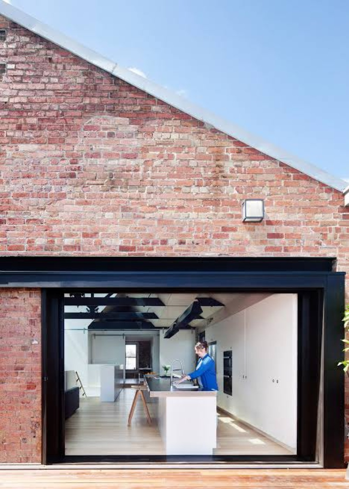

01
Heritage fabric
Nine brick blocks and cobblestone yards form one of Saint Petersburg’s early industrial-commercial landmarks — still occupied, still readable as a 19th-century ensemble.
Crafting the city since the 1870s
Kokorev Cultural Yard
We don’t clear heritage for tracks — we keep nine 19th-century warehouses as a green civic yard for Ligovsky Prospect.
Scroll to exploreThe Site · Ligovsky Prospect 50–52
Built for merchant Vasily Kokorev, this enclave still holds studios, workshops and small businesses beside Moskovsky Station. Federal VSM plans would cut approach tracks through the plot.
01
Nine brick blocks and cobblestone yards form one of Saint Petersburg’s early industrial-commercial landmarks — still occupied, still readable as a 19th-century ensemble.
02
The land has been claimed for VSM terminal approaches. Heavy track infrastructure would cut through the historic layout and erase the courtyard grain.
03
Adaptive reuse keeps every street-facing structure, turns yards into a car-free park, and hosts market hall, workshops and a neighborhood exposition.
Future Slider
Drag to compare the official VSM demolition footprint with the Kokorev Cultural Yard proposal.
Delivery
Delivery depends on agreement from KGA and Russian Railways, and on shifting a pre-allocated federal railway budget toward co-funded public space through public–private partnership.
Support the blueprint
Stakeholders
Some people live with the consequences. Others decide — or fight — the outcome.
People who experience the consequences but do not control the decision.
Restaurants, shops and music clubs already face displacement. In March 2025, over 500 owners and tenants signed an open letter asking to move the VSM terminal away from Ligovsky Prospect.
“Свыше 500 собственников и арендаторов Кокоревских складов подписали открытое письмо к президенту… о переносе строительства вокзала ВСМ.”
Zaks.ru · 20 June 2025
VSM promises Moscow–Petersburg trips in about 2 hours 15 minutes and higher passenger flows. Nearby resettlement and street closures already reshape daily life without a seat at the table.
What matters more here — the historic character of Ligovsky Prospect, or faster transport and new commercial infrastructure?
Tourists, younger Petersburgers and VSM passengers could inherit a food-and-culture cluster inside preserved brick — or only a transport terminal with facade shells.
Would a food-and-culture cluster inside the preserved warehouses attract you, or does the area already have enough of this?
People who decide the project — or who can still change its course.
The city and VSM concession control the site. KGIOP has approved demolition of specific blocks while claiming main historic structures can be integrated into the new station.
“КГИОП добился сохранения части корпусов и складов Кокоревых.”
Alexey Mikhailov, KGIOP · March 2026
Gradozashchitniki argue protected status was illegally removed in the mid-2000s, have gone to the Supreme Court, and keep documenting demolition on site.
“Мы требуем… вернуть ансамблю статус объекта культурного наследия.”
SOS SPb Snos · DP.ru, March 2026
Neighborhood green
The Cultural Yard would add a rare car-free green pocket on Ligovsky Prospect.
Costed proposal · RUB
Year-one requirement 1.334 billion ₽ against 1.4 billion ₽ identified funding. Largest uncertainty: hidden masonry defects after stripping interiors.
| Package | Quantity × rate | Cost | Source |
|---|---|---|---|
| Site cleanup & debris clearance | 1 × 30 000 000 ₽ | 30 000 000 ₽ | Assumption (site prep) |
| Masonry restoration & façade repair | 18 000 m² × 11 000 ₽ | 198 000 000 ₽ | cegla.ru / Polyalpan SPb |
| Courtyard landscaping & paving | 8 000 m² × 12 500 ₽ | 100 000 000 ₽ | Public realm rate assumption |
| Interior adaptive fit-out | 15 000 m² × 45 000 ₽ | 675 000 000 ₽ | Loft conversion index 2026 |
| Engineering infrastructure | 1 package × 97 000 000 ₽ | 97 000 000 ₽ | HVAC, power, water & sewage |
Canvassing
Watch the canvassing clips — then leave your own response below.
Public response
Support a petition-style response asking decision-makers to route VSM approaches away from the Kokorev ensemble.
Team Demolish SPB · It’s Not Bed ESP
Selected sources